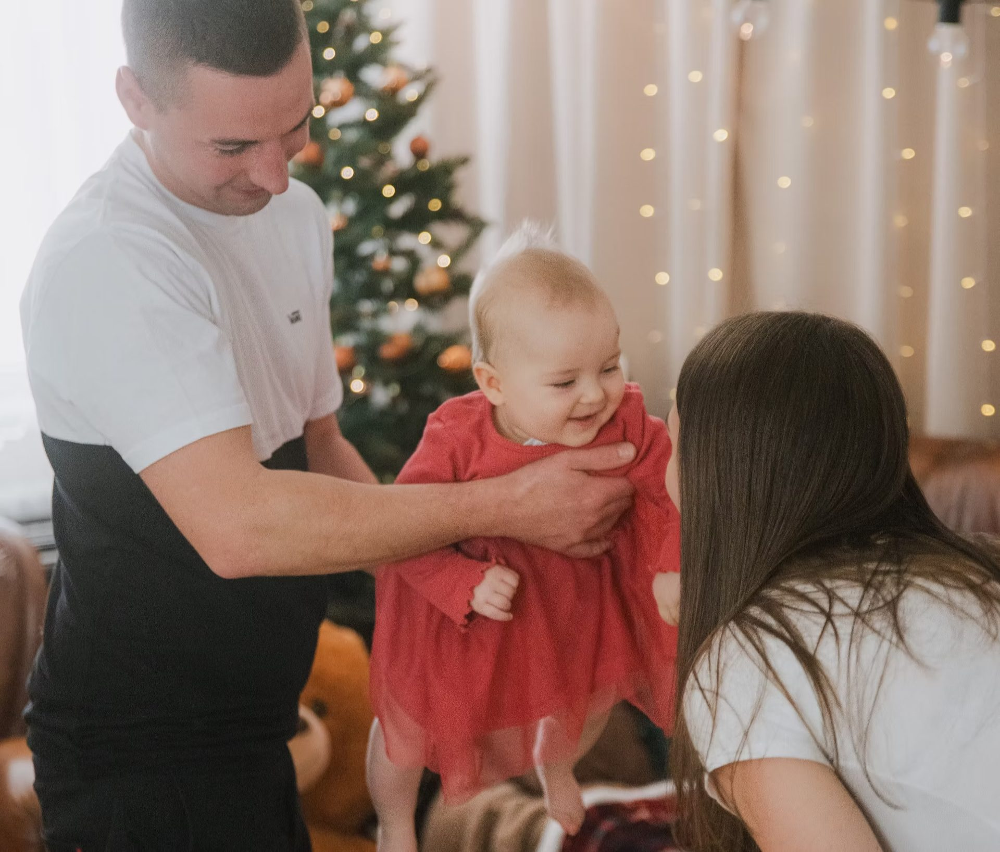
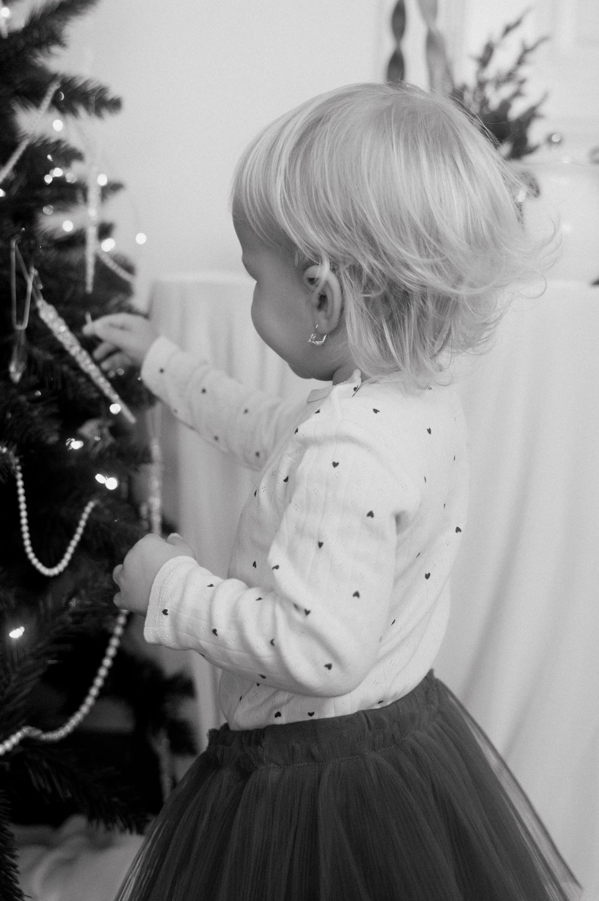
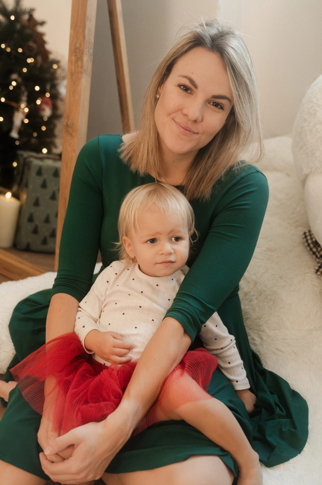
jak se obléct na vánoční focení v ateliéru
Nevíte, co si vzít na vánoční focení? Mám pro vás pár tipů, jak se obléct tak, aby fotky působily přirozeně, útulně a nadčasově.
Vánoční focení je pro mě vždycky trochu srdcovka. Jednak proto, že tyhle fotky mají úplně jinou atmosféru než cokoli během roku – a taky proto, že si na chvíli všichni dovolíme zpomalit, přitulit se, a prostě být spolu. 🎄
A protože se mě často ptáte, co si obléct na vánoční focení, sepsala jsem pár tipů, které vám pomůžou, aby fotky působily přirozeně, hřejivě a nadčasově. A hlavně ne kýčovitě.
1. držte se přírodních, zemitých a tlumených tónů
Bílá, krémová, béžová, hnědá, olivová, khaki, karamelová, vínová nebo třeba jemně šedá – to jsou barvy, které ve vánočně zdobených ateliérech vypadají nádherně. Vyhněte se naopak výrazným červeným, sytě zeleným nebo zlatým tónům – ty by mohly na fotkách až moc poutat pozornost nebo vám odrážet barvy do obličeje… a to nechceme🙏🏻
(Když se tyto barvy vyskytují na oblečení jen v malém množství, např. v nějakém vzoru, tak to nevadí.)
👉 Tady platí: méně je víc. Čím jemnější barvy, tím víc vyniknete vy a vaše emoce.
Další tipy na barvy a palety pro každé roční období najdete v článku co si vzít na sebe na focení.
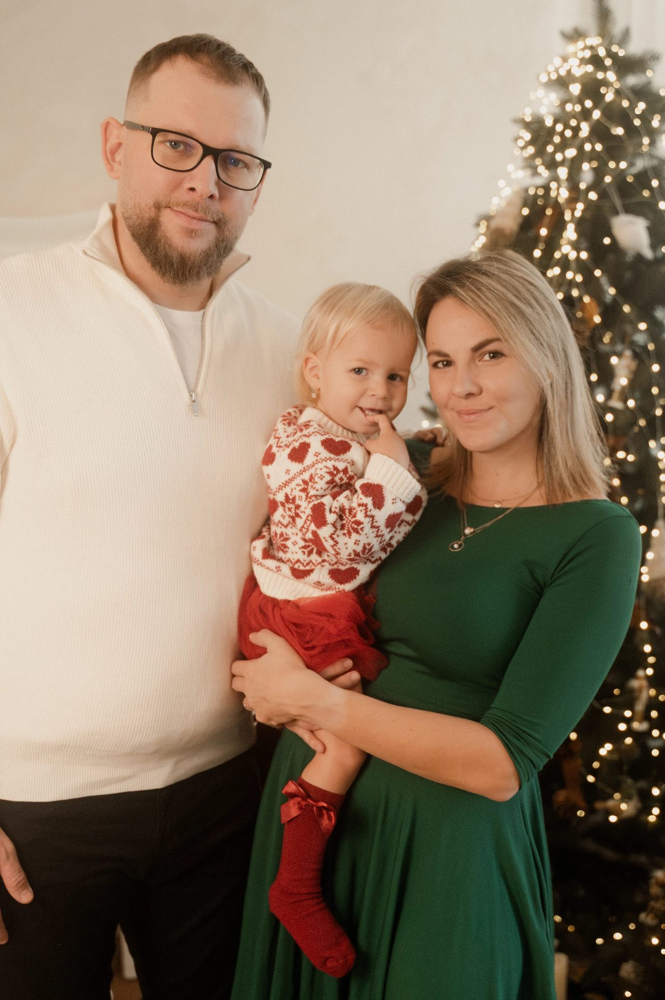
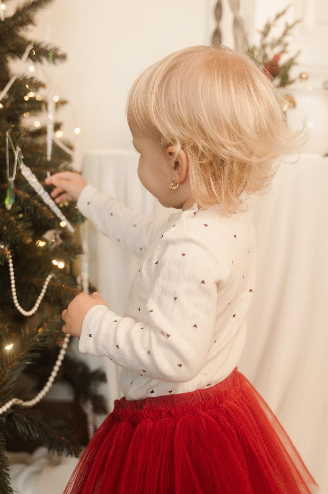
2. kombinujte textury
Když je prostor bílý a minimalistický, skvěle vyniknou různé materiály. Zkuste třeba kombinaci pleteniny, lnu, džínoviny, vlny nebo manšestru. Pletený svetr, jemná košile, dlouhé šaty nebo volné kalhoty – všechno, co působí měkce a pohodlně, se do takového prostředí hodí skvěle.
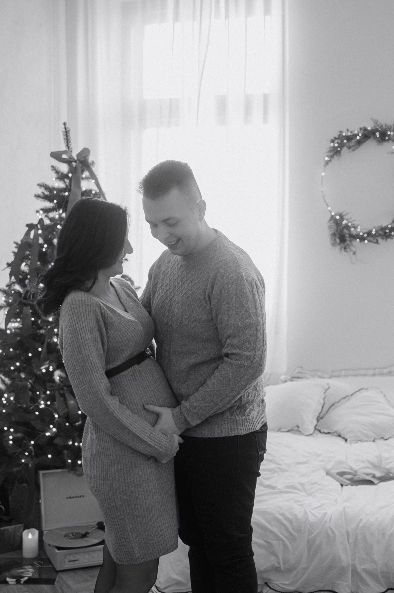
3. pohodlí je základ
Cílem vánočního focení není dokonalost, ale pohoda. Chci, abyste se cítili dobře, mohli se přitulit, sednout si, lehnout, obejmout se. Takže pokud váháte mezi něčím, co „vypadá dobře“, a tím, v čem se cítíte skvěle – vybírejte pohodlí. Na fotkách je totiž vždycky vidět, jak se cítíte.
Pokud jste ale objednaní na delší focení (o délce 1 hodiny), tak je prostor i na více variant oblečení, takže můžete využít různé styly😊
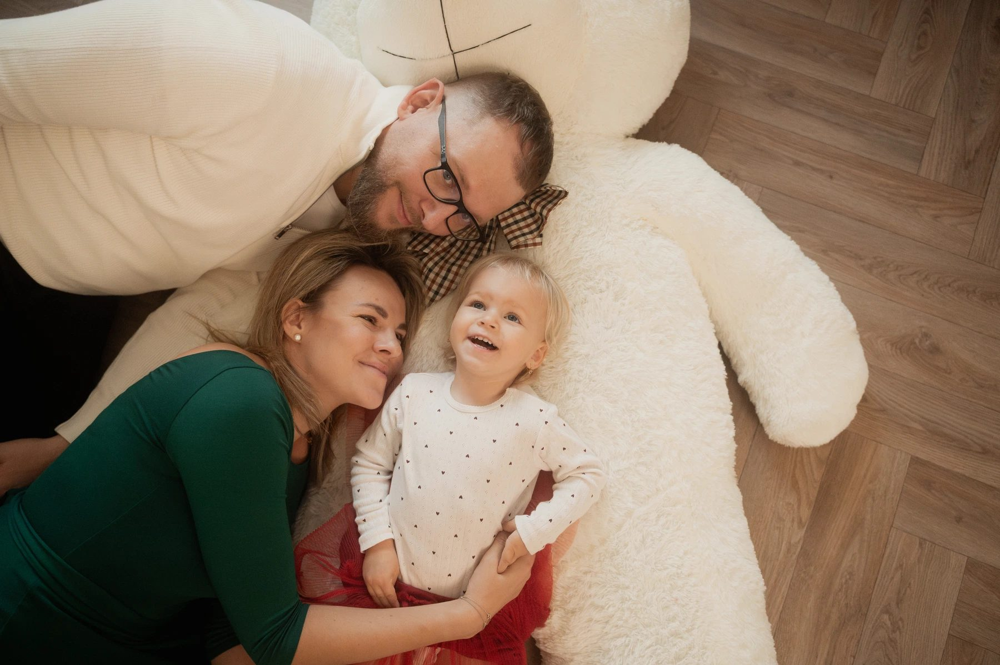
4. sladit, ale ne úplně
Pokud přijdete ve dvojici nebo s dětmi, zkuste sladit outfity do jednoho stylu a barevné palety, ale ne do stejného oblečení.
Třeba: maminka v béžových šatech, táta v hnědé košili, dítě v krémovém svetříku a tmavě zelených kalhotech. Dohromady to bude působit přirozeně, měkce a vizuálně sjednoceně – ale ne „přes kopírák“.
Zkuste se prosím vyhnout tomu, aby jeden člen rodiny přišel v teplákách a druhý ve svátečním elegantním oblečení – takový kontrast na focení opravdu nechceme.
✨ TIP: Tato rodinka ale ukázala, že existují i výjimky. Nechali si natisknout společné mikiny s perníčkem a i když byli všichni oblečení stejně, vypadalo to kouzelně🥰

5. dopřejte si něco navíc
Šála, pletené ponožky, hrnek s kakaem, oblíbená knížka nebo třeba vánoční sušenky – drobnosti, které přinesete, dodají fotkám atmosféru. A pokud máte doma něco, co k vám prostě patří (např. plyšák vašeho dítěte nebo oblíbená deka), klidně to vezměte s sebou.
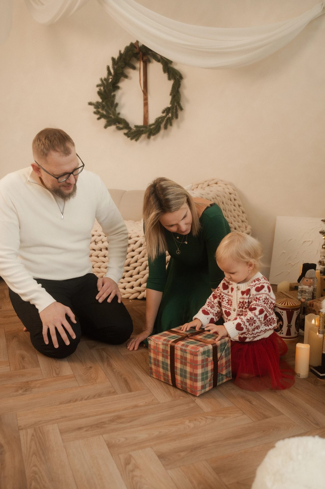
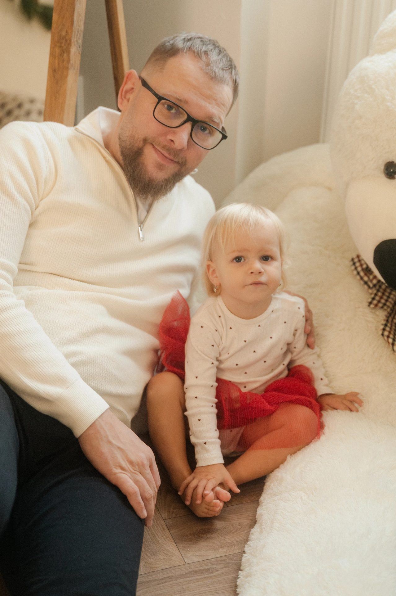
6. oblečení pro děti
U dětí platí to samé – zvolte tlumené barvy a měkké materiály. Svetříky, lacláče, malé šatičky, overal, klidně i punčochy. Vyhněte se velkým potiskům, logům a nápisům.
A hlavně: nechte je být samy sebou. I když si sundají ponožky nebo rozcuchají vlasy, bude to kouzelný. 🤍
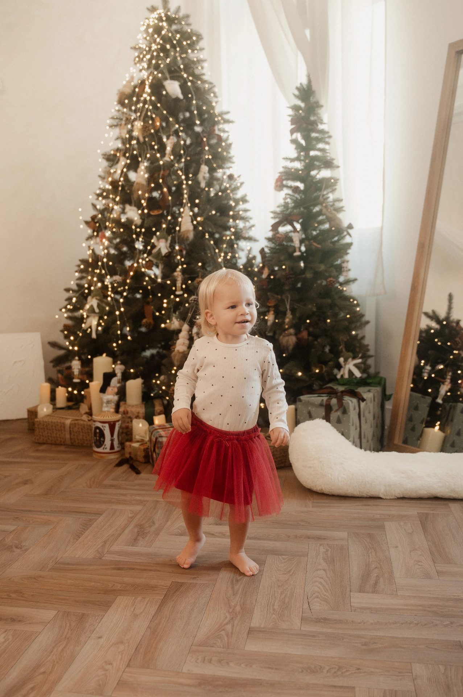
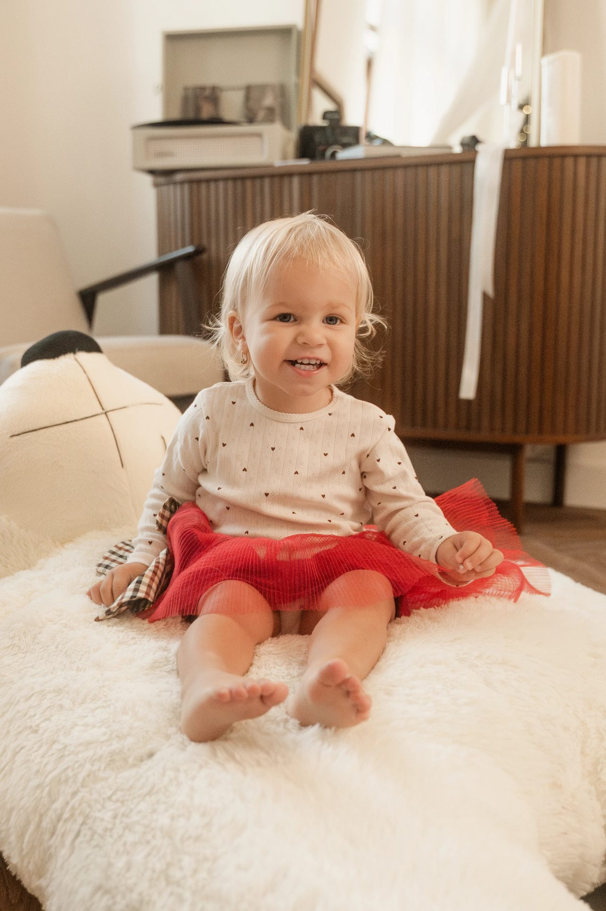
7. a nakonec: buďte sami sebou
To nejhezčí na focení nejsou outfity, ale vy. Jak se smějete, jak se objímáte, jak vaše děti koukají na světýlka. Oblečení jen podtrhne to, co je uvnitř – a o to mi při focení vždycky jde.
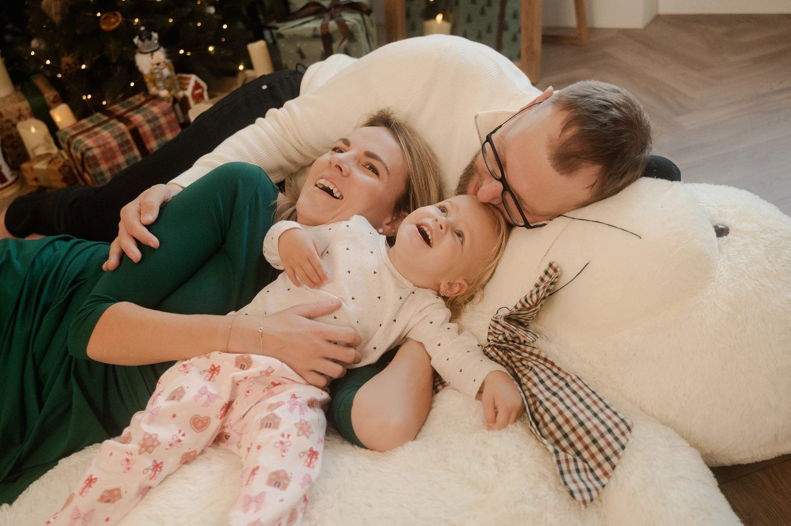
📸 Pokud si nejste jistí, co si vzít, klidně mi napište – moc ráda vám s výběrem pomůžu (nebo pošlu pár ukázek). A hlavně – užijte si samotné focení. Protože u těchto fotek budete jednou vzpomínat na dobu, kdy jste byli spolu. 🌙
Chcete letos taky vánoční fotky, které nebudou kýčovité, ale hřejivé a hlavně vaše? Termíny na vánoční focení v ateliéru se každý rok rychle plní, tak mi napište včas přes kontaktní formulář nebo Instagram. Ceny najdete v ceníku a ukázky vánočních focení v portfoliu. ✨
S láskou,
Sofi
Znáš někoho, komu by tenhle článek pomohl? Klidně mu ho pošli.

mohlo by tě zajímat
Další články, které se ti můžou hodit.
 rady před focením · 3 min čtení
rady před focením · 3 min čteníuniverzální lokace na focení, které máte na dosah
Často mi lidé píšou, že kolem sebe nemají žádné hezké místo na focení. A pokaždé se usměju, protože krásné fotky nevznikají díky místu, ale díky vám.
číst dál rady před focením · 4 min čtení
rady před focením · 4 min čteníjak u mě probíhá rodinné a párové focení
Nečekejte, že se budu přehnaně chválit. Chci vám přiblížit, jakým způsobem přistupuji k rodinnému a párovému focení.
číst dál rady před focením · 5 min čtení
rady před focením · 5 min čteníco si vzít na sebe na focení: 7 tipů, aby ti to slušelo
Oblečení hraje na fotkách obrovskou roli. Proto jsem sepsala pár rad a základních pravidel, kterých je fajn se při výběru outfitu držet.
číst dál